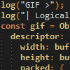
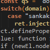
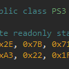

#
my projects

gif-engine-js
Single-file, bare bones GIF parser in ECMAScript 2017
gif-engine-js introduction
View examples and various uses of gif-engine-js.

*NSFW*
Gelbooru Enhancement
Image Viewer and Endless Scroll userscripts for various boorus.
Gelbooru, SankakuComplex, paheal, TBIB etc.

CFW2OFW Helper
CLI utility for user friendly CFW2OFW conversion for PS3 games.
to be used with TABR or DTU exploits